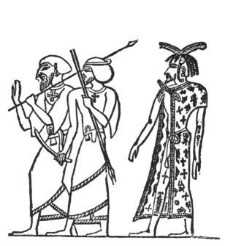
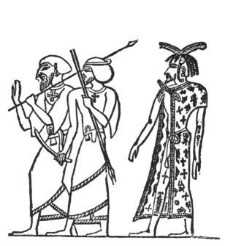

PAPAL PORN


A cardinal hosts a bathtub party (orgy) fit for a king


Pope Sixtus IV was known for being a “lover of boys”
17
A cardinal hosts a bathtub party (orgy) fit for a king
Pope Sixtus IV was known for being a “lover of boys”
17

A monk lusts after a married woman

A monk lusts after another

Monk-ey business-a-plenty with gay clergy

Nothing like a comforting word to get you all choked-up

This Medieval engraving depicts the Pope, a monk, and harlots partying in Hell

The fresco above (dated 1475), entitled: “Doom Mural” is on display at St. Thomas’ Church, Salisbury, England. It features the Pope, a monk, a couple of kings, and a bevy of harlots in a biblical scene in Hell. Revelation 17— “BABYLON THE GREAT (Empire of False Religion), THE MOTHER OF HARLOTS.”
18
The Nativity scene of the three wise men visiting the baby Jesus in a manger has long been a beloved image that the Roman Catholic Church likes to remind its members of annually. But this was not the true portrayal of the events that actually took place prior to the vicious slaughter of infants aged 2 and under by a king
 

A realistic King Herod
The Church’s saintly and diluted version of Herod blessing the Magi—Mosaic (431AD)
Herod’s annihilation of infants
Israelite King Herod, like so many of the past Roman emperors, feared anyone who could be a potential usurper to his throne or his royal line, so much so that he even killed his own ambitious son. After hearing about the prophesied birth of Jesus, Herod sent the three wise men to locate the newborn infant. When they found Jesus, he was in a “house”, not a manger! The King had death in mind for the Son of God. From a logical standpoint, would God really have directed those astrologers (sacrificial priests) to Jesus so that it resulted in the infant’s death? No! The star that they followed was a result of demonic intervention, that’s why those astrologers never returned to Herod, as a result of Divine intervention. (Mathew 2:11, 12, 16-18) Those astrologers also had more satanic talents besides studying the stars. They were Magi priests who were linked to child sacrifice, a popular and ungodly practice back in the day, which accompanied Sun worship and harvest festivals. (Deut. 12:31 & Jeremiah 32:35)
Symbols of pagan and demonic worship that were linked to astrology-based child sacrifice
19